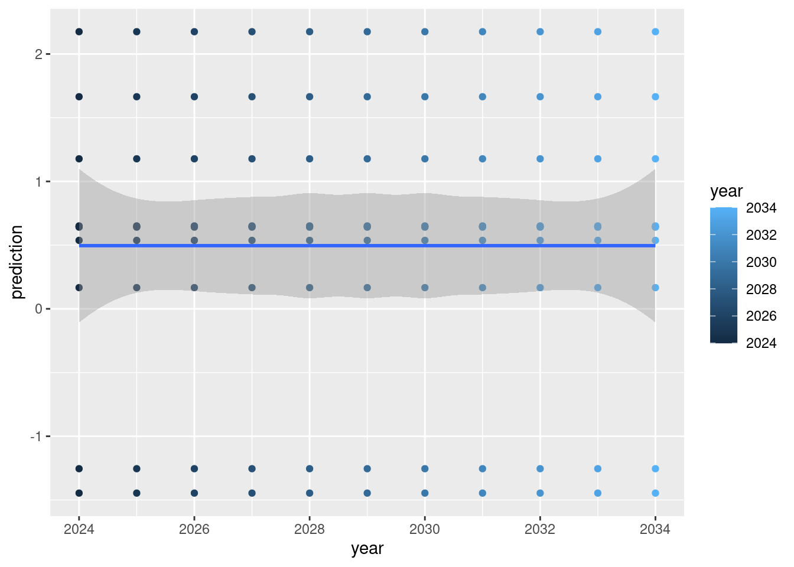

Scheduling events allows us to control when things happen in a sequnence. This can be as simple as “this module will just do one thing” to “this module will do several things, some of which repeat”. We will use a simple example where there is one thing that happens “once” and one thing that happens several times. In “normal” R-speak, we will write a loop.
Return to example in New Module Introducion. This time, we will predict from the linear model, with updated values of the y. In this simple example, we will pretend that each prediction is “one year into the future” and that our y will slowly get bigger.
Code
# .inputObjects ##############y <-rnorm(10)# Init #####x <- y +rnorm(10)# fit a linear modelout <-lm(x ~ y)pred <-list()# Prediction #####startYear <-2023years <- startYear:(startYear +10) +1for (year in years - startYear) { pred[[year]] <-predict(out, newdata =data.frame(y =rnorm(10) + year))}# Plot ####predictions <-data.frame(year =rep(years, each =10), prediction =unlist(pred))# plot the predictionsggplot(predictions, aes(x = year, y = prediction, colour = year)) +geom_point() +geom_smooth()

In the above code, there are 4 sections. These will each be copied into the SpaDES module below, in their respective sections. We have added 1 new section, called “Prediction”.
Open the module file, which will be printed in the console. We can scroll down to the Init function. Copy the Init, the .inputObjects, the Plot part into the new modules, as we did in New Module Introducion.
We must make the same decisions about “local” that are OK if they don’t get keps and “global” objects that we want to keep. These global objects get put into sim. Your new module should have these 3 new sections:
Code
Init <-function(sim) { x <- sim$y +rnorm(10)# fit a linear model sim$out <-lm(x ~ sim$y) sim$pred <-list()}plotFun <-function(sim) { sim$predictions <-data.frame(year =rep(sim$years, each =10), prediction =unlist(sim$pred))# plot the predictions sim$gg <-ggplot(sim$predictions, aes(x = year, y = prediction, colour = year)) +geom_point() +geom_smooth()print(sim$gg)}.inputObjects <-function(sim) { sim$y <-rnorm(10)}
3.3 New Event Function – Prediction
The new part is the for loop. This part takes new covariates (new values for y) that emulates “predicted” covariates, derives a newly predicted x, and we then keep these predictedx values each year.
We use scheduleEvent to do this. Copy the Prediction part into a new function:
Now we need to tell SpaDES when to do each of the steps or “events”. The Init, we do once, at the start. The plotFn we do once, but this time it is at the “end”. The .inputObjects always happens once and “before the start”. The last part (i.e., the prediction event) must happen 10 times, and it must start after Init and before the plotFn.
3.4.1 doEvent
There is a special function in a SpaDES module called doEvent. SpaDES calls this function once, passing the argument event = "init". That means that R will enter into this function only once and run only the init part, unless we specifically tell it to do more. We use the scheduleEvent function. We place this function anywhere we want, in general. In this example, we will place it in a few places.
3.4.1.1 In the init
We look at the init event and we see 2 scheduleEvent calls that come with the template. We will use those to learn. In each “event”, we often see one part that “does something” and another part that “schedules something”. In the default template, we “do” the Init function and we schedule plot and save. We can delete the save event, as we won’t do that here. But we will replace it with “schedule prediction”
sim <-Init(sim)# schedule future event(s)sim <-scheduleEvent(sim, P(sim)$.plotInitialTime, "scheduling", "plot")# sim <- scheduleEvent(sim, P(sim)$.saveInitialTime, "scheduling", "save")# here we create a new event type == "predictions" and we schedule it for `start(sim)`sim <-scheduleEvent(sim, start(sim), "scheduling", "predictions")
Copy the above code chunk to the init section so that it looks like this:
Code
switch( eventType,init = { sim <-Init(sim)# schedule future event(s) sim <-scheduleEvent(sim, P(sim)$.plotInitialTime, "scheduling", "plot")# sim <- scheduleEvent(sim, P(sim)$.saveInitialTime, "scheduling", "save")# here we create a new event type == "predictions" and we schedule it for `start(sim)` sim <-scheduleEvent(sim, start(sim), "scheduling", "predictions") }
3.4.2 The new event
We add code to make a new event, called "predictions" (it must match what we wrote in the scheduleEvent). In this event, we “do” the prediction, then we schedule the next prediction at “time plus 1”
predictions = {# do the Prediction sim <-Prediction(sim)# schedule the next Prediction sim <-scheduleEvent(sim, time(sim) +1, "scheduling", "predictions") }
3.4.3 Double check existing events
If we ran the above changes, we would see an error because the plotFn is, by default, scheduled to run at the time that is specified by .plotInitialTime, which by default is start(sim). We have no data yet at that time. So, we have to update the
Like in New Module Introducion, we have to update the module metadata … what are the inputs, outputs, parameters. SpaDES will not error if the metadata are not correct, but it will try to point out the problems.
A complete version of this new module can be found at scheduling.R. You can copy this over top of the new module that you created here, i.e., keep the same folder structure.
3.6 Questions
how are some ways that scheduleEvent is different from a “loop”?
We can change the “step” length between events.
We can interweave events, e.g., a fire event then a tree growth event
When is a loop better than scheduling?
Loops are much faster than scheduling.
But really, avoid loops in R if you can help it
Chances are that the first versions of this module didn’t work. How do you fix it?